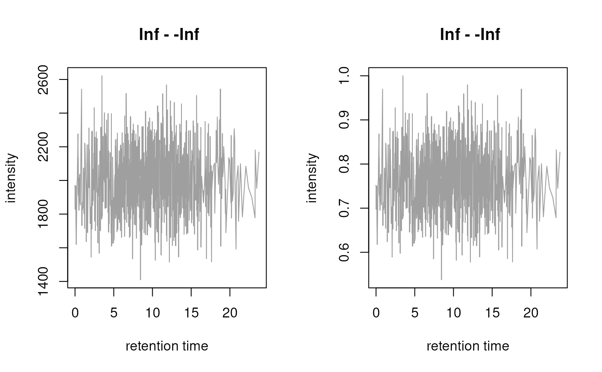

R/functions-Chromatogram.R, R/methods-Chromatogram.R
Chromatogram-class.RdThe Chromatogram class is designed to store
chromatographic MS data, i.e. pairs of retention time and intensity
values. Instances of the class can be created with the
Chromatogram constructor function but in most cases the dedicated
methods for OnDiskMSnExp and
MSnExp objects extracting chromatograms should be
used instead (i.e. the chromatogram() method).
Chromatogram(
rtime = numeric(),
intensity = numeric(),
mz = c(NA_real_, NA_real_),
filterMz = c(NA_real_, NA_real_),
precursorMz = c(NA_real_, NA_real_),
productMz = c(NA_real_, NA_real_),
fromFile = integer(),
aggregationFun = character(),
msLevel = 1L
)
aggregationFun(object)
# S4 method for Chromatogram
show(object)
# S4 method for Chromatogram
rtime(object)
# S4 method for Chromatogram
intensity(object)
# S4 method for Chromatogram
mz(object, filter = FALSE)
# S4 method for Chromatogram
precursorMz(object)
# S4 method for Chromatogram
fromFile(object)
# S4 method for Chromatogram
length(x)
# S4 method for Chromatogram
as.data.frame(x)
# S4 method for Chromatogram
filterRt(object, rt)
# S4 method for Chromatogram
clean(object, all = FALSE, na.rm = FALSE)
# S4 method for Chromatogram,ANY
plot(
x,
col = "#00000060",
lty = 1,
type = "l",
xlab = "retention time",
ylab = "intensity",
main = NULL,
...
)
# S4 method for Chromatogram
msLevel(object)
# S4 method for Chromatogram
isEmpty(x)
# S4 method for Chromatogram
productMz(object)
# S4 method for Chromatogram
bin(
x,
binSize = 0.5,
breaks = seq(floor(min(rtime(x))), ceiling(max(rtime(x))), by = binSize),
fun = max
)
# S4 method for Chromatogram
normalize(object, method = c("max", "sum"))
# S4 method for Chromatogram
filterIntensity(object, intensity = 0, ...)
# S4 method for Chromatogram,Chromatogram
alignRt(x, y, method = c("closest", "approx"), ...)
# S4 method for Chromatogram,Chromatogram
compareChromatograms(
x,
y,
ALIGNFUN = alignRt,
ALIGNFUNARGS = list(),
FUN = cor,
FUNARGS = list(use = "pairwise.complete.obs"),
...
)| rtime | for |
|---|---|
| intensity | for |
| mz | for |
| filterMz | for |
| precursorMz | for |
| productMz | for |
| fromFile | for |
| aggregationFun | for |
| msLevel | for |
| object |
|
| filter | for |
| x |
|
| rt | for |
| all | for |
| na.rm | for |
| col | for |
| lty | for |
| type | for |
| xlab | for |
| ylab | for |
| main | for |
| ... | for |
| binSize | for |
| breaks | for |
| fun | for |
| method |
|
| y | for |
| ALIGNFUN | for |
| ALIGNFUNARGS |
|
| FUN | for |
| FUNARGS | for |
The mz, filterMz, precursorMz and
productMz are stored as a numeric(2) representing a range
even if the chromatogram was generated for only a single ion (i.e. a
single mz value). Using ranges for mz values allow this class to
be used also for e.g. total ion chromatograms or base peak chromatograms.
The slots `precursorMz` and `productMz` allow to represent SRM
(single reaction monitoring) and MRM (multiple SRM) chromatograms. As
example, a `Chromatogram` for a SRM transition 273 -> 153 will have
a `@precursorMz = c(273, 273)` and a
`@productMz = c(153, 153)`.
Chromatogram objects can be extracted from an MSnExp or OnDiskMSnExp
object with the chromatogram() function.
Alternatively, the constructor function Chromatogram can be used, which
takes arguments rtime, intensity, mz, filterMz, precursorMz,
productMz, fromFile, aggregationFun and msLevel.
aggregationFun: gets the aggregation function used to create the
Chromatogram.
as.data.frame: returns a data.frame with columns "rtime" and
"intensity".
fromFile: returns an integer(1) with the index of the originating file.
intensity: returns the intensities from the Chromatogram.
isEmpty: returns TRUE if the chromatogram is empty or has only NA
intensities.
length: returns the length (i.e. number of data points) of the
Chromatogram.
msLevel: returns an integer(1) with the MS level of the chromatogram.
mz: get the m/z (range) from the Chromatogram. The function returns
a numeric(2) with the lower and upper boundaries. Parameter filter
allows to specify whether the m/z range used to filter the originating
object should be returned or the m/z range of the actual data.
precursorMz: get the m/z of the precursor ion. The function returns a
numeric(2) with the lower and upper boundary.
productMz: get the m/z of the producto chromatogram/ion. The function
returns a numeric(2) with the lower and upper m/z value.
rtime: returns the retention times from the Chromatogram.
filterRt: filter/subset the Chromatogram to the specified retention
time range (defined with parameter rt).
filterIntensity: filter a Chromatogram() object removing data
points with intensities below a user provided threshold. If intensity
is a numeric value, the returned chromatogram will only contain data
points with intensities > intensity. In addition it is possible to
provide a function to perform the filtering.
This function is expected to take the input Chromatogram (object) and
to return a logical vector with the same length then there are data points
in object with TRUE for data points that should be kept and FALSE
for data points that should be removed. See examples below.
alignRt: Aligns chromatogram x against chromatogram y. The resulting
chromatogram has the same length (number of data points) than y and the
same retention times thus allowing to perform any pair-wise comparisons
between the chromatograms. If x is a MChromatograms() object, each
Chromatogram in it is aligned against y. Additional parameters (...)
are passed along to the alignment functions (e.g. closest()).
Parameter method allows to specify which alignment method
should be used. Currently there are the following options:
method = "closest" (the default): match data points in the first
chromatogram (x) to those of the second (y) based on the difference
between their retention times: each data point in x is assigned to the
data point in y with the smallest difference in their retention times
if their difference is smaller than the minimum average difference
between retention times in x or y (parameter tolerance for the
call to the closest() function).
By setting tolerance = 0 only exact retention times are matched against
each other (i.e. only values are kept with exactly the same retention
times between both chromatograms).
method = "approx": uses the base R approx function to approximate
intensities in x to the retention times in y (using linear
interpolation). This should only be used for chromatograms that were
measured in the same measurement run (e.g. MS1 and corresponding MS2
chromatograms from SWATH experiments).
bin: aggregates intensity values from a chromatogram in discrete bins
along the retention time axis and returns a Chromatogram object with
the retention time representing the mid-point of the bins and the
intensity the binned signal. Parameters binSize and breaks allow to
define the binning, fun the function which should be used to aggregate
the intensities within a bin.
compareChromatograms: calculates a similarity score between 2
chromatograms after aligning them. Parameter ALIGNFUN allows to define
a function that can be used to align x against y (defaults to
ALIGNFUN = alignRt). Subsequently, the similarity is calculated on the
aligned intensities with the function provided with parameter FUN which
defaults to cor (hence by default the Pearson correlation is calculated
between the aligned intensities of the two compared chromatograms).
Additional parameters can be passed to the ALIGNFUN and FUN with the
parameter ALIGNFUNARGS and FUNARGS, respectively.
clean: removes 0-intensity data points (and NA values). See clean()
for details.
normalize, normalise: normalises the intensities of a chromatogram by
dividing them either by the maximum intensity (method = "max") or total
intensity (method = "sum") of the chromatogram.
plot: plots a Chromatogram object.
MChromatograms for combining Chromatogram in
a two-dimensional matrix (rows being mz-rt ranges, columns samples).
chromatogram()] for the method to extract chromatogram data from an MSnExporOnDiskMSnExpobject. [clean()] for the method to *clean* aChromatogram` object.
Johannes Rainer
## Create a simple Chromatogram object.
ints <- abs(rnorm(100, sd = 100))
rts <- seq_len(length(ints))
chr <- Chromatogram(rtime = rts, intensity = ints)
chr
#> Object of class: Chromatogram
#> length of object: 100
#> from file:
#> mz range: [NA, NA]
#> rt range: [1, 100]
#> MS level: 1
## Extract intensities
intensity(chr)
#> [1] 140.0043517 25.5317055 243.7263611 0.5571287 62.1552721 114.8411606
#> [7] 182.1817661 24.7325302 24.4199607 28.2705449 55.3699384 62.8982042
#> [13] 206.5024895 163.0989402 51.2426950 186.3011492 52.2012515 5.2601910
#> [19] 54.2996343 91.4074827 46.8154420 36.2951256 130.4543545 73.7776321
#> [25] 188.8504929 9.7445104 93.5847354 1.5950311 82.6788954 151.2399651
#> [31] 93.5363190 17.6488611 24.3685465 162.3548883 11.2038083 13.3997013
#> [37] 191.0087468 27.9237242 31.3445978 106.7307879 7.0034850 63.9123324
#> [43] 4.9964899 25.1483443 44.4797116 275.5417575 4.6531380 57.7709069
#> [49] 11.8194874 191.1720491 86.2086482 24.3236740 20.6087195 1.9177592
#> [55] 2.9560754 54.9827542 227.4114857 268.2557184 36.1221255 21.3355750
#> [61] 107.4345882 66.5088249 111.3952419 24.5896412 117.7563309 97.5850616
#> [67] 106.5057320 13.1670635 48.8628809 169.9450568 147.0736306 28.4150344
#> [73] 133.7320413 23.6696283 131.8293384 52.3909788 60.6748047 10.9935672
#> [79] 17.2181715 9.0327287 192.4343341 129.8392759 74.8791268 55.6224329
#> [85] 54.8257264 111.0534893 261.2334333 15.5693776 43.3889790 38.1951112
#> [91] 42.4187575 106.3101996 104.8712620 3.8102895 48.6148920 167.2882611
#> [97] 35.4361164 94.6347886 131.6826356 29.6640025
## Extract retention times
rtime(chr)
#> [1] 1 2 3 4 5 6 7 8 9 10 11 12 13 14 15 16 17 18
#> [19] 19 20 21 22 23 24 25 26 27 28 29 30 31 32 33 34 35 36
#> [37] 37 38 39 40 41 42 43 44 45 46 47 48 49 50 51 52 53 54
#> [55] 55 56 57 58 59 60 61 62 63 64 65 66 67 68 69 70 71 72
#> [73] 73 74 75 76 77 78 79 80 81 82 83 84 85 86 87 88 89 90
#> [91] 91 92 93 94 95 96 97 98 99 100
## Extract the mz range - is NA for the present example
mz(chr)
#> [1] NA NA
## plot the Chromatogram
plot(chr)
## Create a simple Chromatogram object based on random values.
chr <- Chromatogram(intensity = abs(rnorm(1000, mean = 2000, sd = 200)),
rtime = sort(abs(rnorm(1000, mean = 10, sd = 5))))
chr
#> Object of class: Chromatogram
#> length of object: 1000
#> from file:
#> mz range: [NA, NA]
#> rt range: [0.002530252, 23.75382]
#> MS level: 1
## Get the intensities
head(intensity(chr))
#> [1] 1658.884 1828.917 1971.020 1935.111 1965.487 1752.787
## Get the retention time
head(rtime(chr))
#> [1] 0.002530252 0.004804333 0.086750187 0.102224373 0.114592272 0.155135059
## What is the retention time range of the object?
range(rtime(chr))
#> [1] 0.002530252 23.753823765
## Filter the chromatogram to keep only values between 4 and 10 seconds
chr2 <- filterRt(chr, rt = c(4, 10))
range(rtime(chr2))
#> [1] 4.031794 9.975626
## Data manipulations:
## normalize a chromatogram
par(mfrow = c(1, 2))
plot(chr)
plot(normalize(chr, method = "max"))

## Align chromatograms against each other
chr1 <- Chromatogram(rtime = c(1, 2, 3, 4, 5, 6, 7, 8, 9, 10),
intensity = c(3, 5, 14, 30, 24, 6, 2, 1, 1, 0))
chr2 <- Chromatogram(rtime = c(2.5, 3.42, 4.5, 5.43, 6.5),
intensity = c(5, 12, 15, 11, 5))
plot(chr1, col = "black")
points(rtime(chr2), intensity(chr2), col = "blue", type = "l")
## Align chr2 to chr1 without interpolation
res <- alignRt(chr2, chr1)
rtime(res)
#> [1] 1 2 3 4 5 6 7 8 9 10
intensity(res)
#> [1] NA 5 12 15 11 5 NA NA NA NA
points(rtime(res), intensity(res), col = "#00ff0080", type = "l")
## Align chr2 to chr1 with interpolation
res <- alignRt(chr2, chr1, method = "approx")
points(rtime(res), intensity(res), col = "#ff000080", type = "l")
legend("topright", col = c("black", "blue", "#00ff0080","#ff000080"),lty = 1,
legend = c("chr1", "chr2", "chr2 matchRtime", "chr2 approx"))
## Compare Chromatograms. Align chromatograms with `alignRt` and
## method `"approx"`
compareChromatograms(chr2, chr1, ALIGNFUNARGS = list(method = "approx"))
#> [1] 0.9768469
## Data filtering
chr1 <- Chromatogram(rtime = c(1, 2, 3, 4, 5, 6, 7, 8, 9, 10),
intensity = c(3, 5, 14, 30, 24, 6, 2, 1, 1, 0))
## Remove data points with intensities below 10
res <- filterIntensity(chr1, 10)
intensity(res)
#> [1] 14 30 24
## Remove data points with an intensity lower than 10% of the maximum
## intensity in the Chromatogram
filt_fun <- function(x, prop = 0.1) {
x@intensity >= max(x@intensity, na.rm = TRUE) * prop
}
res <- filterIntensity(chr1, filt_fun)
intensity(res)
#> [1] 3 5 14 30 24 6
## Remove data points with an intensity lower than half of the maximum
res <- filterIntensity(chr1, filt_fun, prop = 0.5)
intensity(res)
#> [1] 30 24